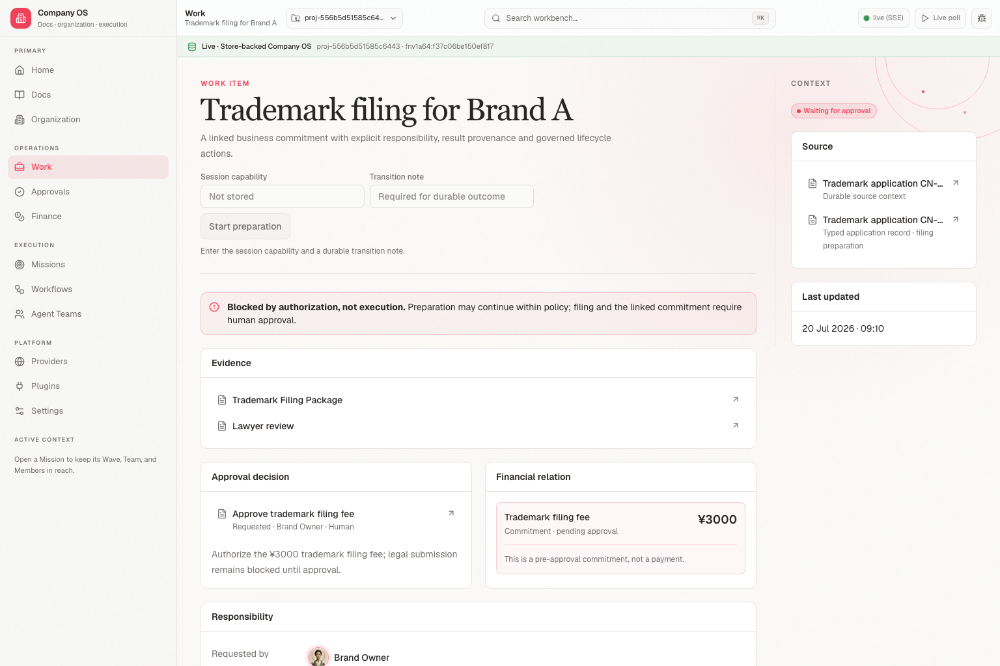
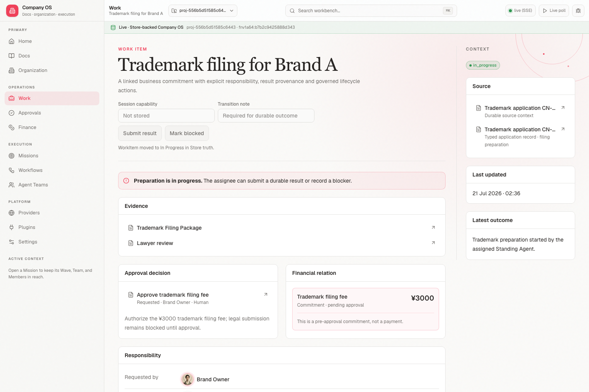
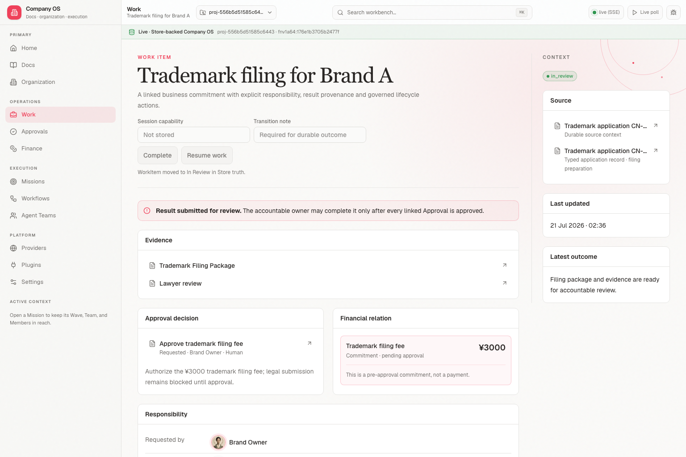
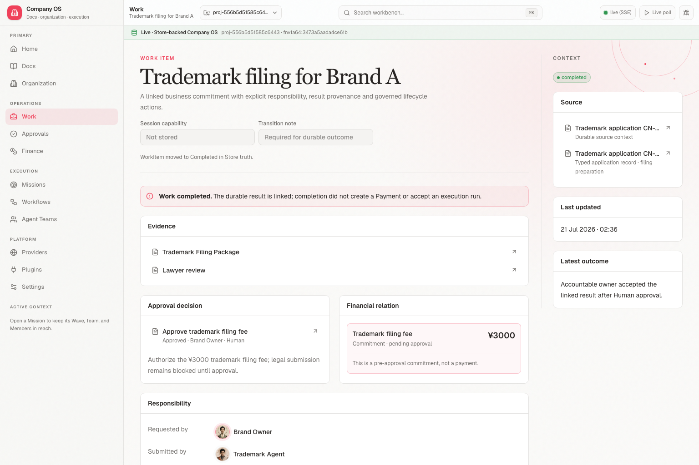

1 · Waiting for approval
Preparation may start, but completion remains governed.

Waiting → in progress → in review → Human Approval → completed. Responsibility and result provenance remain linked, while Payment remains a separate explicit action.
Preparation may start, but completion remains governed.

The explicit assignee started preparation through work_item.transition.

Durable outcome and evidence are ready; completion is blocked until Approval.

After Human Approval, the owner accepted the result. No Payment was created.
